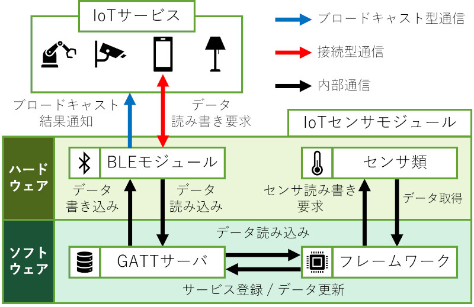

卒業研究として制作したIoTセンサーモジュールのフレームワークです。
デバイスに搭載されたセンサーから周辺環境の物理量を計測し、得られたデータをBluetooth Low Energy（BLE）通信を用いて、他のIoTサービス（デバイス・アプリケーションなど）に同時配信を行います。
既に他のデバイスメーカーがIoTセンサーモジュールを製造・発売していますが、これらのBLE通信を用いるIoTセンサーモジュールは、同時に1対1のみしか通信ができません。また、特定のデバイス・アプリケーションと利用することを前提として設計されています。
仮に複数のIoTサービスを同時に運用する場合、対応するIoTセンサモジュールを運用するIoTサービスの分だけ用意する必要があり、金銭的コストや管理コストが増大するという問題があります。
本モジュールでは、BLEのブロードキャストとユニキャストを併用して、IoTセンサーモジュールが持つ情報を複数のIoTサービスへ同時に配信します。ユーザーは条件式と呼ばれるIoTセンサーモジュールの動作定義をBLE通信を用いて行います。条件式とは「温度が20℃以上ならば」や、「湿度が30%以下ならば」などの「センサー値を用いた等号/不等号」を指します。設定した条件式はセンサー値取得時に評価され、評価結果はビーコンデータとして配信されます。他のIoTサービスは、ビーコンデータを受信するだけで条件式の適否を知ることができます。また、IoTセンサーモジュールと接続することで詳細なデータ取得やIoTセンサーモジュールの設定変更ができます。
この他にも、不要なセンサーの電源を切る、プロセッサをスリープモードにさせるなどの節電対策を施すことで、コイン電池のみで数か月クラスの稼働時間を実現しています。
フレームワークの設計は全て自分で行い、また、今後の移植のことを考えた設計を意識しました。また卒業研究のプロジェクトでは、PDCAサイクルを意識し、余裕をもって実装を進めることができました。